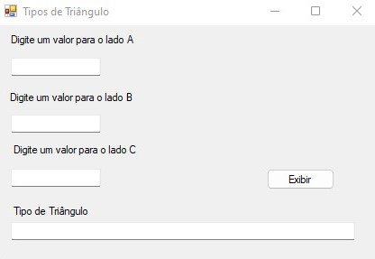
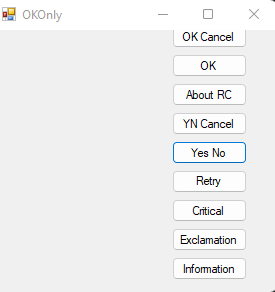
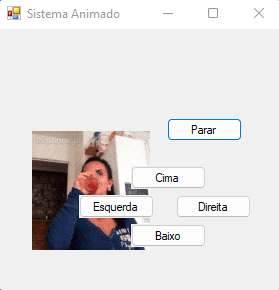
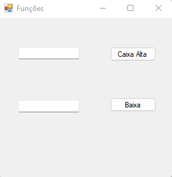
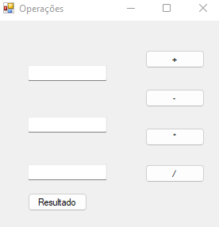
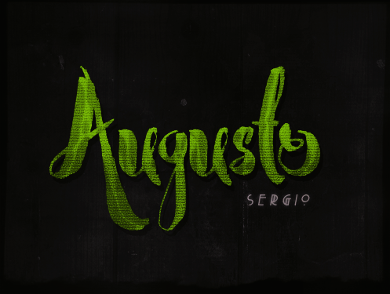

Entre em contato através das redes sociais ou envie um e-mail.
Contato
asergioscosta@gmail.com
+55 32 99837-6945
Redes Sociais


Página destinada a descrição dos projetos desenvolvidos por mim durante minha experiência profissional.
Este projeto foi realizado no IDE (Ambiente de Desenvolvimento Integrado) Microsoft Visual Studio na linguagem C#, onde o mesmo visa demonstrar como verificar se três valores informados pelo usuário representam os lados de um triângulo. Ao final uma imagem ilustrativa do referido triângulo é mostrada. A tecnologia utilizada para a elaboração do projeto foi C# e a IDE Visual Studio.
Este projeto foi realizado no IDE (Ambiente de Desenvolvimento Integrado) Microsoft Visual Studio na linguagem C#, onde o mesmo visa demonstrar que ao clicar em um dos botões aparecerá uma mensagem correspondente ao texto onde conterá as opções para apertar. A tecnologia utilizada para a elaboração do projeto foi C# e a IDE Visual Studio.
Este projeto foi realizado no IDE (Ambiente de Desenvolvimento Integrado) Microsoft Visual Studio na linguagem C#, onde o mesmo visa demonstrar que ao clicar em um dos botões, o gif (Graphics Interchange Format) se movimenta para cima, baixo, lado esquerdo ou direito, sendo necessário apertar o botão parar para o mesmo parar de se movimentar. A tecnologia utilizada para a elaboração do projeto foi C# e a IDE Visual Studio.
Este projeto foi realizado no IDE (Ambiente de Desenvolvimento Integrado) Microsoft Visual Studio na linguagem C#, onde o mesmo visa demonstrar a partir da digitação de uma palavra ou texto a conversão para CAIXA ALTA ou caixa baixa. A tecnologia utilizada para a elaboração do projeto foi C# e a IDE Visual Studio.
Este projeto foi realizado no IDE (Ambiente de Desenvolvimento Integrado) Microsoft Visual Studio na linguagem C#, onde o mesmo visa demonstrar como verificar o resultado das operações a partir dos valores informados pelo usuário (soma, subtração, multiplicação e divisão). A tecnologia utilizada para a elaboração do projeto foi C# e a IDE Visual Studio.
Este projeto foi realizado no editor de imagens Adobe Photoshop, onde foi realizado a mesclagem utilizando resources como styles, fontes, pngs e texturas. A tecnologia utilizada para a elaboração do projeto foi o Adobe Photoshop.
Este projeto foi realizado no editor de imagens Adobe Photoshop, onde foi realizado a mesclagem utilizando resources como styles, fontes, pngs e texturas. A tecnologia utilizada para a elaboração do projeto foi o Adobe Photoshop.

asergioscosta@gmail.com
+55 32 99837-6945